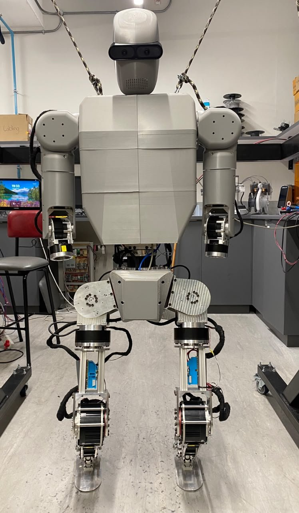
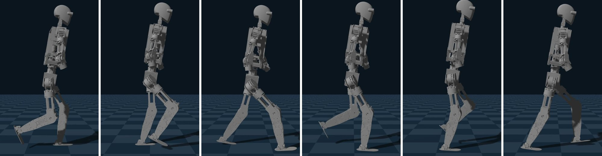
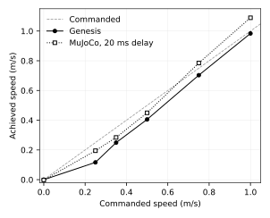
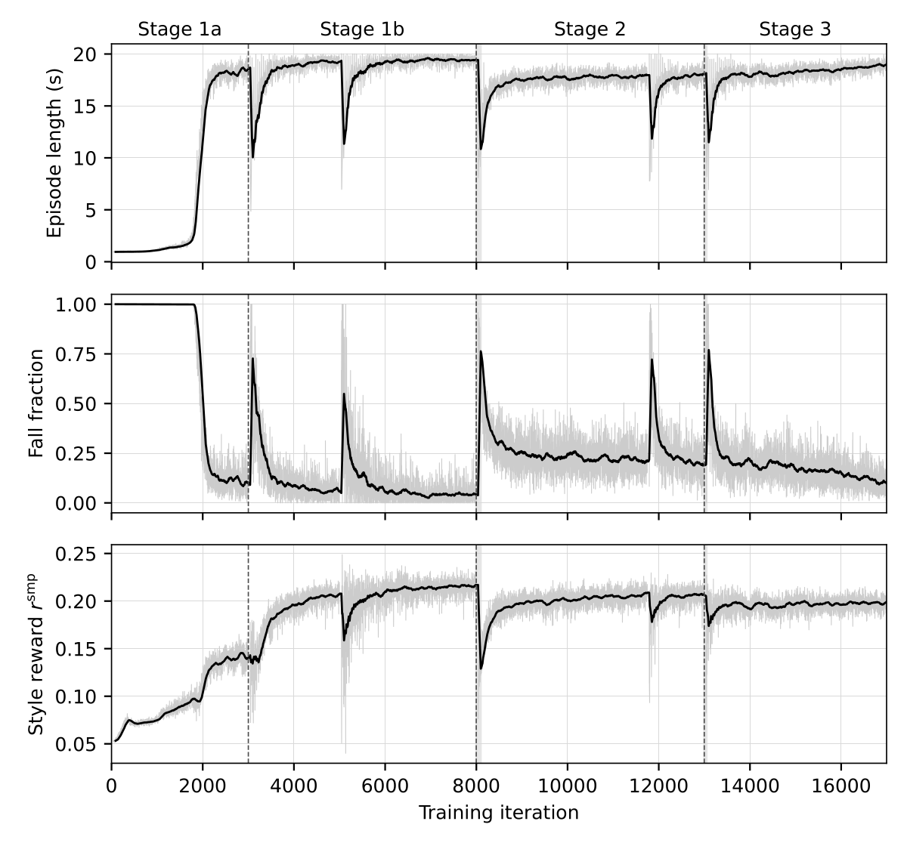
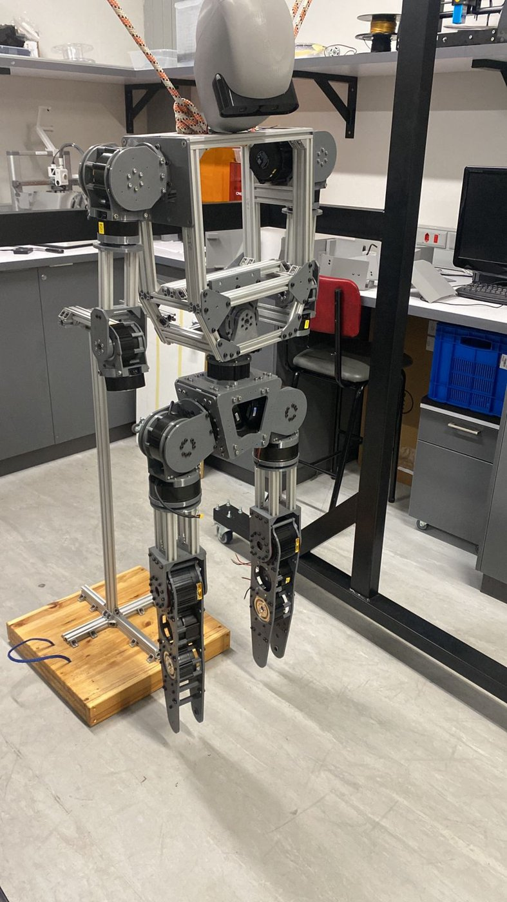
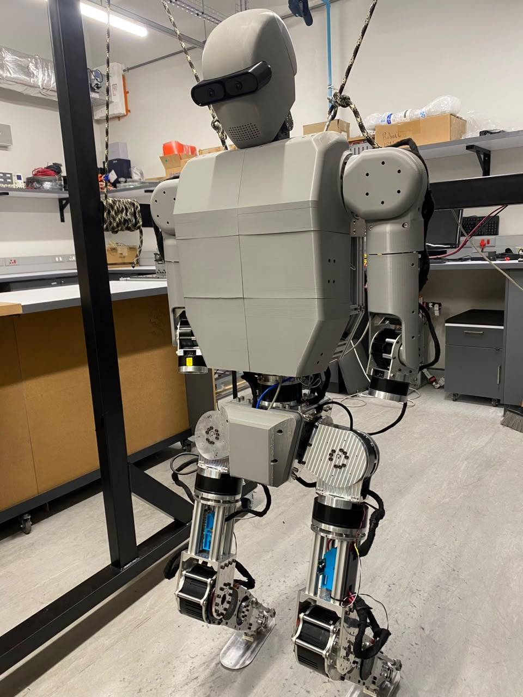
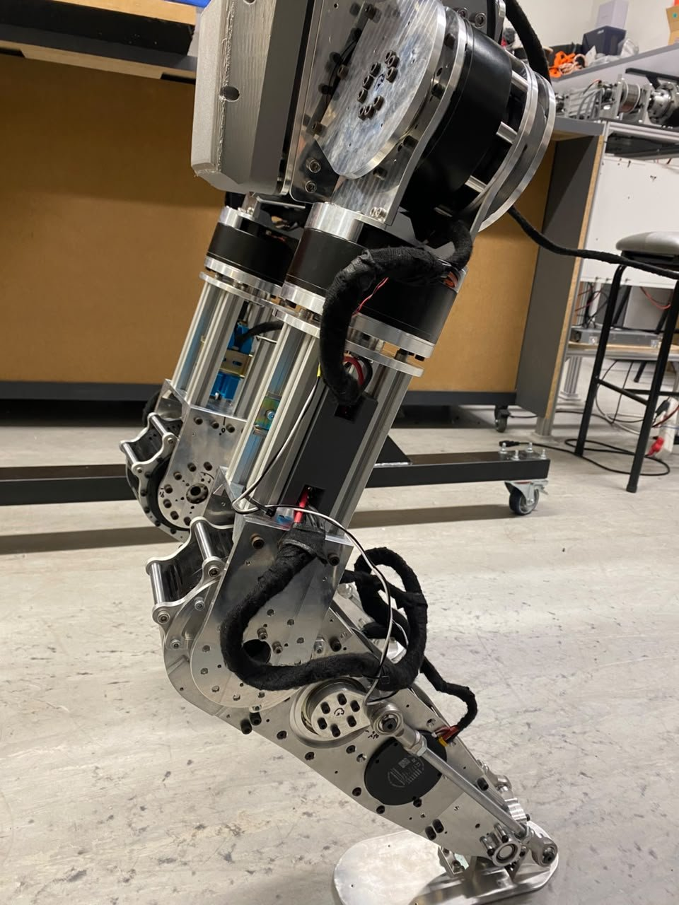

Walking
The robot walked forward ten times on the floor, at commanded speeds of 0.35 and 0.5 m/s, without a fall.
by
Thesis presented in partial fulfilment of the requirements for the degree of Master of Engineering (Research) in the Faculty of Engineering at Stellenbosch University
Supervisor: Dr W.D. Duckitt
November 2026

The policy runs on the physical robot through the same runtime that was tested in simulation. For safety, the robot was tethered to a gantry.
The robot walked forward ten times on the floor, at commanded speeds of 0.35 and 0.5 m/s, without a fall.

The deployed policy stood with a slight forward lean, so one tether line stayed slightly taut. A short fine-tuning in simulation removed the lean: the forward pitch fell from 6.8° to 1.4°, and the robot stood twice for 120 s with the tether lines completely slack.
The policy was trained with reinforcement learning in the Genesis simulator, with a motion prior learned from human motion capture shaping its walking style.

At a commanded 2 m/s, the highest speed in training. One gait cycle in six frames, 0.14 s apart.

At a 1.0 m/s command the policy walks at 0.98 m/s; at lower commands it walks slower than commanded.

Episode length, fall fraction and style reward over the four training stages.
The commanded speed changes the gait. Training used commands of up to 2 m/s; the thesis evaluates speeds up to 1.0 m/s.
The policy follows a commanded direction of travel and facing direction while walking.





Supervisor: Dr W.D. Duckitt. Hand: M.A.G. Smith. Head: J.P. de Freitas. Electronic Systems Laboratory, Stellenbosch University.